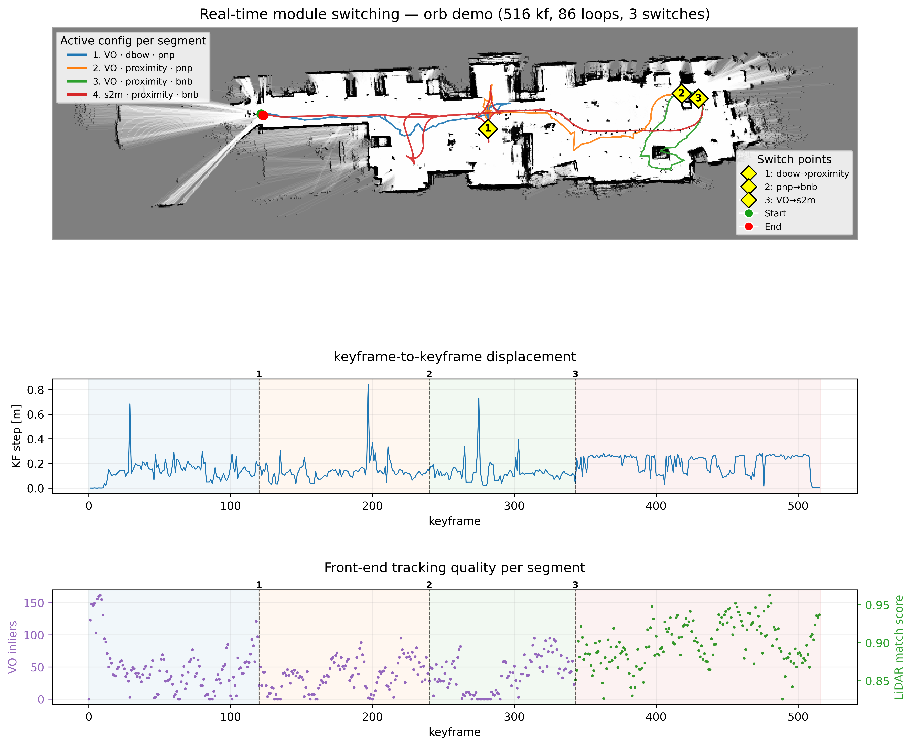

Robot camera POV (left) and the live occupancy map with loop closures (right). The front-end, proposer, and verifier are exchanged on the fly - including a full visual-to-LiDAR sensor handoff - while the same shared map keeps building without a break in the trajectory.
A modular SLAM framework that treats simultaneous localization and mapping as a set of interchangeable components rather than a single fixed pipeline. Every pipeline is reduced to three swappable axes - the front-end (odometry), the loop proposer, and the loop verifier - operating over one shared planar map and one shared memory hierarchy. Each keyframe, whether it comes from a 2D LiDAR or an RGB-D camera, is converted into a common map unit, so established SLAM methods interoperate as plug-in modules through explicit interfaces instead of being locked to one sensor. The result is a single system that can be configured into many distinct pipelines, mix sensing modalities, and exchange any module while a run is in progress. It was built as a hybrid C++/Python system and evaluated on real indoor datasets captured with a Jetson-powered mobile robot.
SLAM systems are usually built as tightly-coupled, single-sensor pipelines. A visual system and a LiDAR system share the same underlying stages - odometry, loop detection, loop verification, and graph optimization - yet their implementations are entangled and cannot be mixed, compared, or extended without rewriting large parts of the stack. That makes it hard to test one new component in isolation, hard to fall back to a second sensor when the first degrades, and hard to reuse a proven optimizer or memory model across modalities.
This work reframes SLAM as a software-architecture problem. By defining clean interfaces between the front-end, proposer, verifier, and back-end, any module becomes replaceable and any sensor becomes a source of the same shared map. The payoff is threefold: pipelines can be chosen to fit the environment, a single new component can be benchmarked against alternatives under identical conditions, and the system can keep mapping through a live sensor or module change instead of restarting.
Because all state lives in one sensor-agnostic map and both front-ends emit poses in the same base frame, any module can be exchanged during a run - the loop proposer, the verifier, the LiDAR variant, and even the tracking sensor itself. A visual-to-LiDAR handoff continues the trajectory from the optimized graph pose with no teleport and no map reset, demonstrating that modularity holds not just at configuration time but live.
The hot path - signature store, memory tiers, SE(2) graph, and branch-and-bound - runs in a native C++ core, while Python handles orchestration, configuration, and live control. The tiered memory model bounds how many past places are ever searched, keeping per-keyframe cost low and the system light enough to target compute-constrained embedded platforms.
Signatures, STM/WM/LTM memory, SE(2) graph, and branch-and-bound on the real-time hot path
Runner, live module switching, dataset and ROS event sources
Shared SE(2) pose-graph optimization back-end
Appearance-based loop candidate retrieval
ICP / GICP scan-based loop verification
Visual descriptor matching and geometric loop verification
Short-term / working / long-term tiers with rehearsal and retrieval
Mobile robot platform used to capture the real indoor datasets
The most valuable insight was that cross-modal loop verification is a genuinely reliable robustness mechanism: letting one modality propose a loop and a different modality confirm it filters out the false closures that a single-sensor pipeline would accept and warp its map around. Getting this right required a shared map representation that carries both a LiDAR scan and a visual payload per keyframe, so either verifier can act on any proposal.
Live module switching over one shared map was the other hard problem. Keeping the trajectory continuous across a sensor handoff meant every front-end had to emit poses in the same base frame and continue from the optimized graph pose rather than its own local origin. Combined with a bounded memory hierarchy that keeps the search set small, the framework stays real-time while remaining fully reconfigurable.
A single shared map assembled across module configurations - live occupancy map, trajectory with loop closures, and the module state driving each segment of the run.

Full hybrid C++/Python framework with the modular front-end, proposer, verifier, and shared back-end, plus the batch and real-time switching runners.
View on GitHub